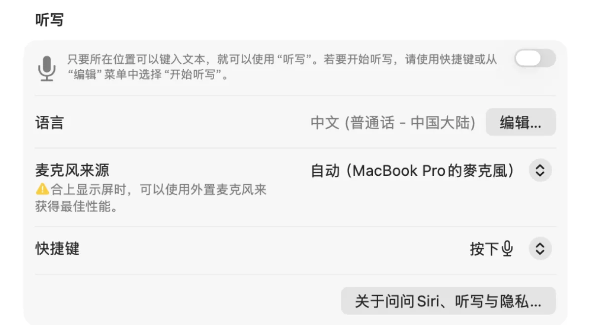
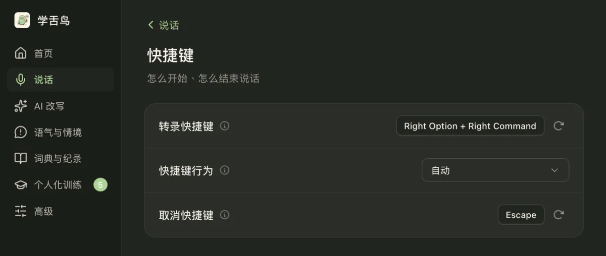
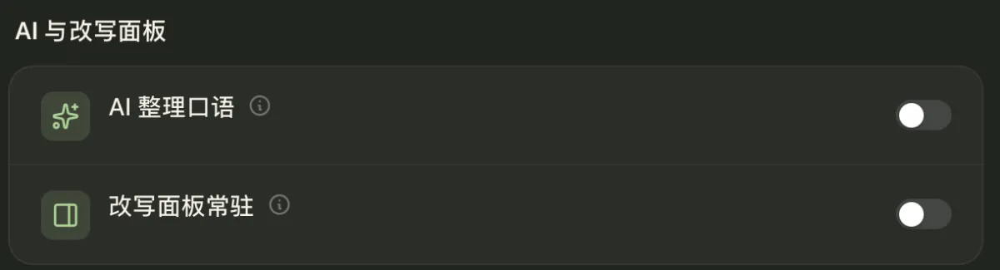
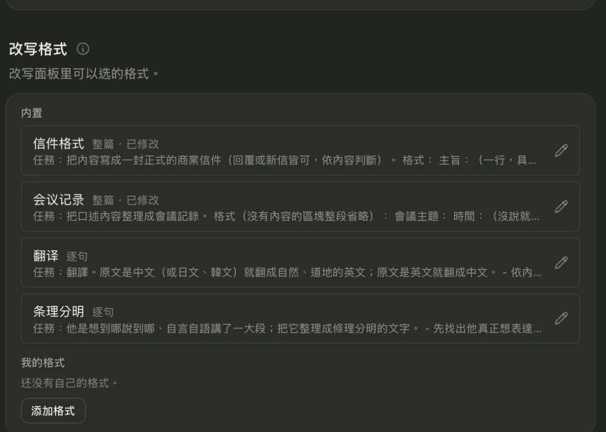
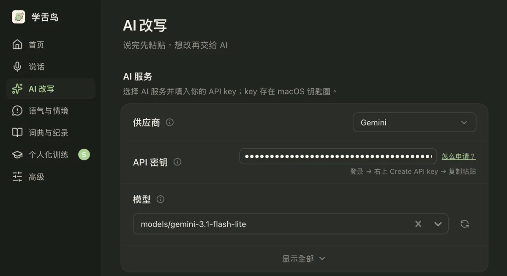
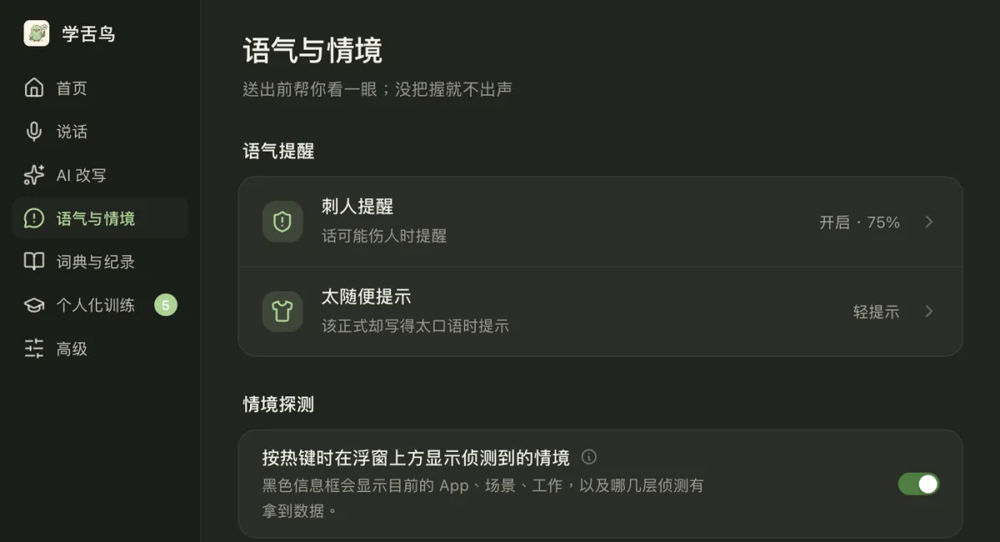
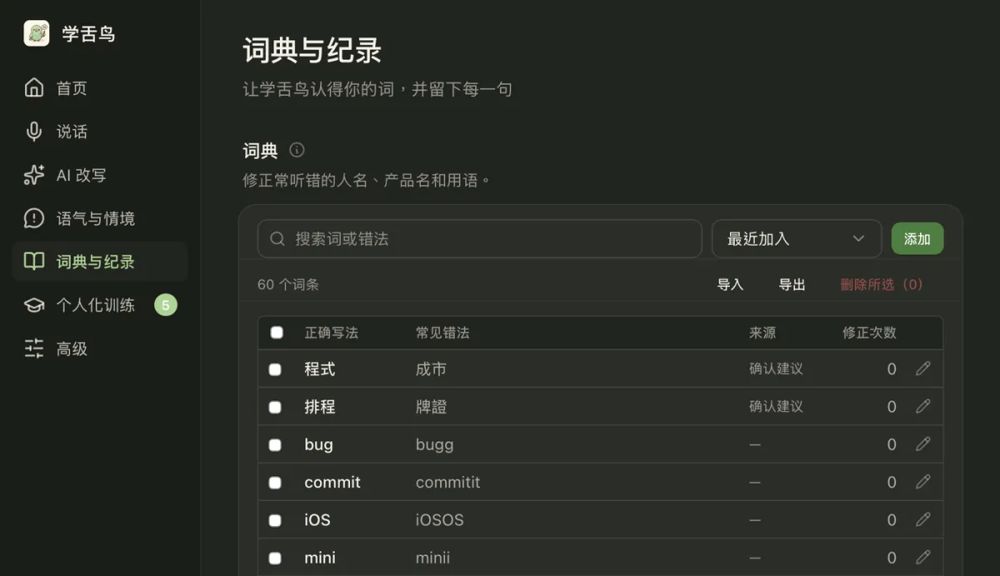
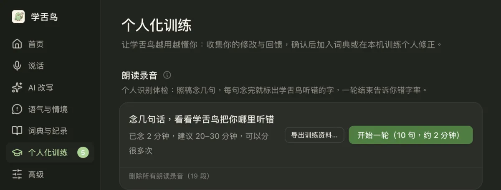

1. 先试 macOS 自带听写
如果只需要偶尔口述一两句话，不一定要安装额外软件。打开「系统设置」，搜索「听写」并按提示启用。把光标放进备忘录、邮件等文本框，再用系统设置的快捷键输入。快捷键、语言和网络要求可能因 macOS 版本有所不同，建议以设备显示为准。

2. 经常写字：按住说话，松开粘贴
日常沟通时，最麻烦的往往不是识别，而是打开新窗口、复制转写结果，再回到原来的 App。学舌鸟支持按住右 Option + 右 Command 说话，松开后将识别文字插入当前光标位置，也有持续听写模式。需要先完成 macOS 要求的相关权限设置，并测试常用 App 的兼容性。

3. 说错又改口，怎么让文字更清楚？
自然说话难免有「呃、那个」或者突然改变时间。例如「明天三点开会，不对，三点半，材料今晚给你」，整理后可以变为「明天三点半开会，材料今晚给你」。这里仅是说明示例，不是实际模型测试。学舌鸟可选用 AI 口语整理功能，但日期、人名和数字仍应人工核对。

4. 直接说中文，再生成英文
跨语言工作时，如果要先输入中文、打开翻译器、复制英文，再切回原来的窗口，会打断思路。学舌鸟提供「翻译」改写模式，可将识别的中文生成英文供你确认。请注意本机语音识别与 AI 翻译是不同流程，翻译可能需要自行设置 AI 服务和 API Key。


5. 消息太冲？发送之前看看语气
一条简单的进度询问，也可能被对方解读成责备。例如把「你怎么还没交材料？」改成「想确认材料的进度，方便告诉我预计什么时候可以完成吗？」。学舌鸟提供语气提醒、情绪温度和正式度调整，以及可自行编辑的改写建议，最终是否采用仍由用户决定。

6. 专业名词总是识别错？
人名、产品名称和中英混合术语，容易出现同音字错误。学舌鸟提供个人词典、修改确认和本机个性化训练，让常用词逐步得到改善。不过个性化不等于零错误，建议从自己的常用人名和项目缩写开始测试。


7. 根据需求选择输入方式
偶尔输入，先试 macOS 自带听写；每天在不同 App 内写很多内容，再评估快捷键和持续听写；经常翻译或调整表达，则比较 AI 改写的帮助。学舌鸟的语音识别和个性化训练主要在本机运行，但可选 AI 改写可能将文字发送到配置的外部服务。目前适用于 Apple 芯片 Mac，macOS 11 及以上。